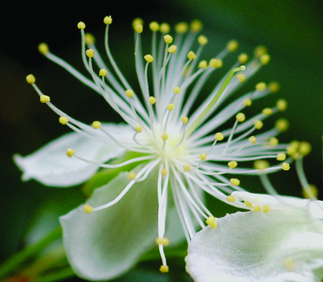
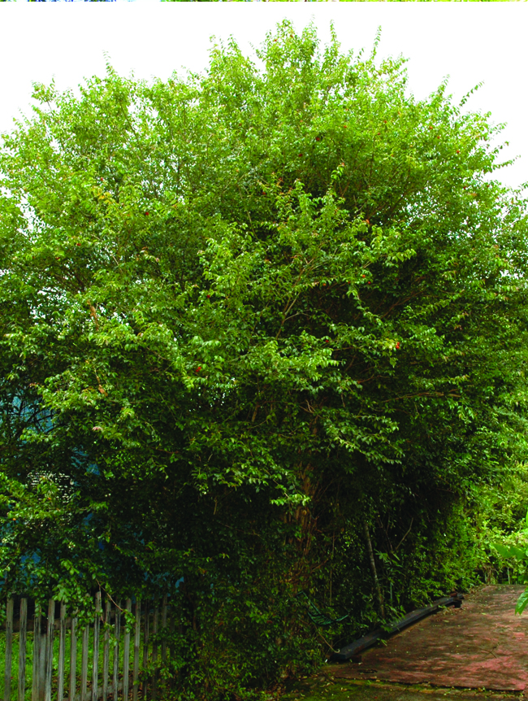
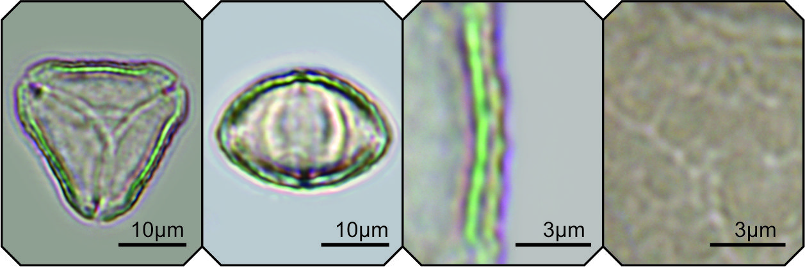

L.
Hábito:
Origem:
Período de Floração:
Características da Flor:
Síndrome de polinização: melitofilia
Unidade de atração: inflorescência
Sexualidade: hermafrodita
Tamanho da flor: pequena
Forma: taça
Simetria: actinomorfa
Cor da flor: branca
Antese: diurna
Deiscência da antera:
Odor:
Tipo de recurso floral:
Imagens da Planta, Flor e Frutos:




Descrição polínica:
Mônade, pequeno a médio, P = 16,22 ± 1,69 (11,56-19,61), E = 24,88 ± 2,01 (18,25- 28,10), radial, isopolar, âmbito triangular, oblato, P/E = 0,65 ± 0,04 (0,58-0,73). Tricolporado, ectoabertura do tipo parassincolporado, endoabertura circular, presença de fastígio. Exina de espessura 1,39 ± 0,10 (1,27-1,54), superfície verrucada-escabrada (visível em até 2.500x).
Imagens do Grão de Pólen:
